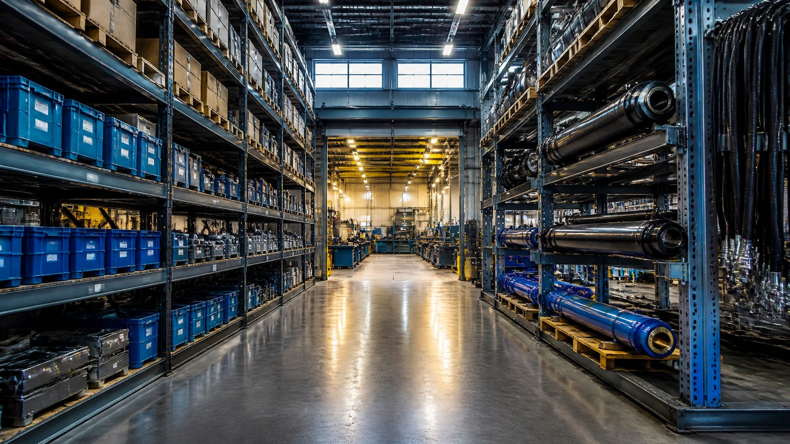

Vous décrivez
Par téléphone, e-mail ou via le formulaire : références, photos, plans, symptômes de panne.

Négoce, étude, fabrication, maintenance : quatre services complémentaires, une même équipe technique, un établissement unique à Casablanca.

Une large gamme de composants hydrauliques, pneumatiques et mécaniques issus de constructeurs européens, avec l’accompagnement technique qui évite les erreurs de référence.
À partir d’une plaque constructeur, d’un plan, d’une photo ou d’un échantillon.
Proposition d’un composant compatible lorsque la référence d’origine n’est plus fabriquée.
Stock local ou commande auprès des constructeurs, avec suivi des délais annoncés.
Vérification des pressions, débits, fixations et interfaces avant commande.

Nous concevons des équipements hydrauliques sur mesure et des systèmes électro-hydrauliques adaptés à votre process, à votre espace disponible et à vos contraintes d’exploitation.
Analyse des mouvements, des charges, des cycles et des contraintes d’environnement.
Calculs de pression, débit, puissance et dissipation thermique ; choix des composants.
Schémas hydrauliques, plans d’implantation, modélisation 3D du bloc et de la centrale.
Documentation de la solution, nomenclature et préconisations de maintenance.

Notre atelier assemble les vérins, les centrales et les lignes hydrauliques : usinage, montage, tuyauterie, câblage et essais avant livraison.
Réalisation selon plan ou modèle, avec choix des matériaux et de l’étanchéité.
Réservoirs, groupes moteur-pompe, manifold, filtration et instrumentation.
Découpe, cintrage, sertissage des flexibles et raccordement des ensembles.
Contrôle d’étanchéité et essais de fonctionnement avant expédition.

Nous garantissons l’entretien et la maintenance de vos équipements hydrauliques : diagnostic, réparation de centrales, de vérins et de composants, montage et raccordement sur site.
Recherche de panne, mesures de pression et de débit, analyse de l’huile et des composants.
Remise en état des vérins, pompes, moteurs, distributeurs et blocs hydrauliques.
Montage, tuyauterie, raccordement des installations et remise en service.
Remplacement des filtres et des flexibles, contrôle d’étanchéité, préconisations de suivi.
Un processus simple, documenté, avec un interlocuteur qui suit votre dossier jusqu’au bout.
Par téléphone, e-mail ou via le formulaire : références, photos, plans, symptômes de panne.
Vérification technique, identification des composants, évaluation de la réparation ou du remplacement.
Une solution technique argumentée et un devis détaillé : composants, main-d’œuvre, délais.
Approvisionnement, fabrication ou réparation, essais, livraison et mise en service sur site.
Recherche de la cause réelle : pression, débit, pollution, usure, réglage.
Démontage, expertise, remplacement des joints et guidages, remontage et essais.
Pompes, distributeurs, blocs, filtration, réservoirs et circuits de refroidissement.
Installation d’équipements, cintrage de tubes, sertissage et raccordement.
Réglages de pression et de débit, essais de fonctionnement, accompagnement au démarrage.
Kits de rechange, joints, flexibles, cartouches et composants d’usure.
Décrivez la panne, envoyez une photo de la plaque et les symptômes : nous vous indiquons rapidement la marche à suivre.